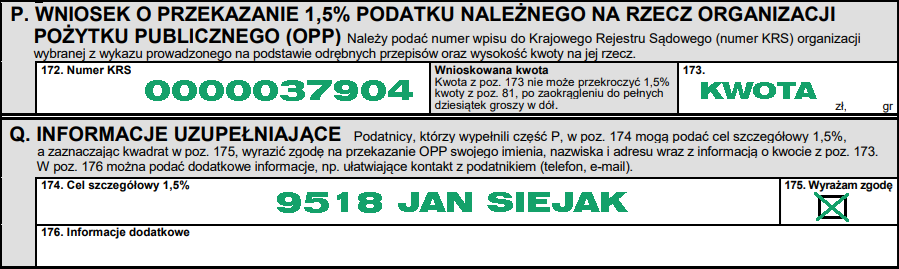

O MNIE
Siema jestem Jasiu, mam 16 lat. Aktualnie uczę się w kierunku Technika Informatyki. Mam wiele zainteresowań: Ptaszniki, Latanie dronem, Fotografia, Filmowanie, Granie na różnych konsolach tych nowszych i tych starszych.
WESPRZYJ MNIE
Od dziecka choruję na rdzeniowy zanik mięśni (SMA), choroba ta jest dla mnie bardzo dużym utrudnieniem w życiu codziennym, powoduje ona że moje mięśnie zanikają, przez co jestem bardzo osłabiony, i brakuje mi sił na wykonywanie najprostszych czynności, problemy z przemieszczaniem się, oddychaniem.
JAK MOŻESZ MI POMÓC ?
ROZLICZENIE Z PODATKU 1,5%
WPŁACAJĄC DAROWIZNĘ NA KONTO
Z dopiskiem
9581 Jan Siejak - darowizna na pomoc i ochronę zdrowia
KONTAKT